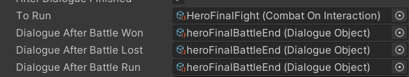

Sprint 1 Part 2 (2/11/24 to 2/25/24)
Task 1: New Bridge Cutscene
After revamping pre-existing cutscenes last sprint, I created a brand new cutscene for the first time. In this scene,
the protagonist (Druid) meets the tyrannical king's court Jester, who sics the previously defeated Hero onto the Druid.
Outside of dialogue, this cutscene wasn't implemented at all before, and it was missing elements such as the Jester entirely.
I didn't expect new cutscene creation to take as long as it did. My experience in the last sprint helped a lot, but
I got tripped up by linking GameObjects to each other and ensuring that each piece of the scene
referenced the correct objects. On the other hand, actually animating the characters and working in the Unity Timeline tab
was much easier, thanks to what I learned from last sprint's tasks. A lot of work also went into reverse engineering other,
bug-free, cutscenes. This especially helped me understand how to transition from the overworld to a fight scene and back.
Unfortunately I was set back when some dependencies got way too tangled, and I had to revert a commit to my branch. Next time
I work on a new cutscene I plan on making more frequent commits. Unlike scripting, I found it way harder to undo and keep track
of changes with so many moving pieces in-editor.
Task 2: Final Battle Dialogue Fix
My next major task was fixing the very final dialogue not triggering after defeating the final boss. From testing, I found that
the dialogue played just fine -- when the player actually
As a time-saving measure, running away from any battle is treated the same as winning it in our development version of Project Quest.
However, previous devs still included functionality to run different dialogue depending on the final outcome of a battle:

I found that if someone forgets to add the same Dialogue Object dependency to "Battle Won" and "Battle Run", then running away won't count as a win anymore.
I ended up spending some more time experimenting with what would happen (or break) when deleting or adding dependencies into these slots,
on my own experimental branch.
After this, I really feel that I'm starting to get a better grasp on Project Quest's codebase.
Approximate hours breakdown (includes implementation, testing, bugfixing, reading the docs, etc.):
Due to the overlap with spring break I had less tasks than the previous sprint, so I logged remaining hours playing Franken and Cellosseum. I also watched playthrough videos of Undertale over break, then tried (and failed) to defeat the Sans fight.
Franken, along with Undertale, inspired the original pitch for Project Quest, and I had never played it before.
Celloseum is a WolverineSoft game! Since I've only just returned to WolvSoft after a year and a half, I thought it would be useful to play through and see what's expected from a more recent WolvSoft title.